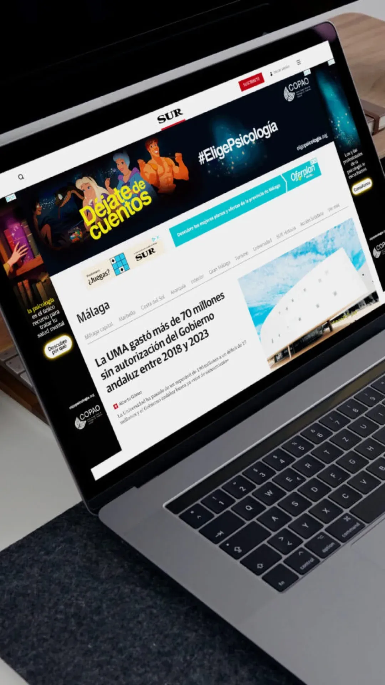
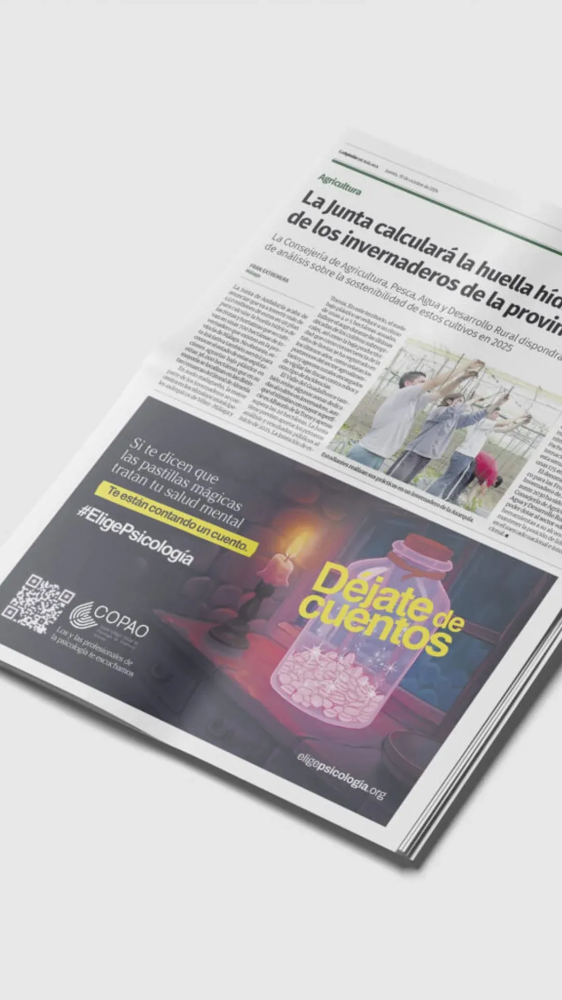
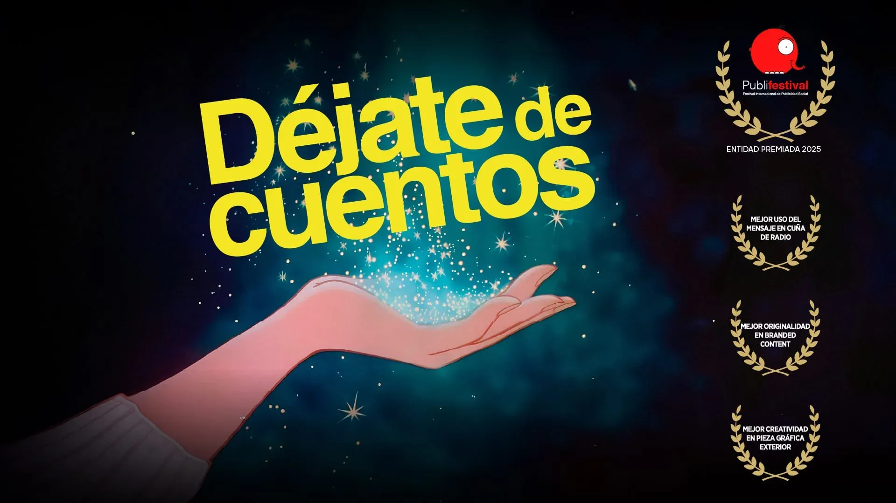

Copao
COPAO es una campaña concebida con un propósito claro: provocar una reflexión profunda sobre
la
salud mental en un momento en que hablar de bienestar emocional sigue siendo un desafío.
Bajo el
lema “Déjate de cuentos. Elige Psicología”, la iniciativa fue creada con motivo del Día
Mundial
de la Salud Mental para visibilizar la importancia de cuidarnos por dentro tanto como por
fuera
y promover la psicología como una herramienta real y accesible para abordar nuestros
conflictos, miedos y dificultades cotidianas.
Este proyecto no parte de una lógica estética vacía, sino de una intención humana: romper
con
excusas, estigmas y evasiones que muchas veces nos impiden pedir ayuda o reconocer que
necesitamos apoyo. En cada pieza, en cada visual y en cada mensaje se buscó transmitir
honestidad y cercanía, sin edulcorar ni minimizar la experiencia de quienes luchan con su
salud
mental.
El trabajo fue desarrollado en contexto de agencia (Credo), lo que implicó integrar
estrategia,
creatividad y comunicación en una campaña con objetivo social. La ejecución visual acompaña
el
tono directo del mensaje, reforzando una narrativa que no solo informa, sino que conecta,
despierta consciencia y genera empatía.
COPAO representa mi capacidad para abordar proyectos con trascendencia e impacto real,
pensar
campañas que no solo sean visualmente efectivas, sino que tengan significado cultural y
emocional. Es un ejemplo de diseño aplicado a causas que importan, donde la identidad visual
se
convierte en vehículo de mensaje y de cambio.


